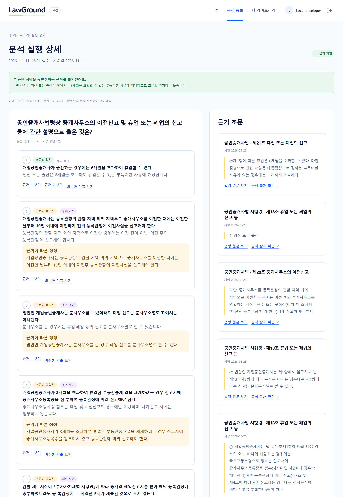
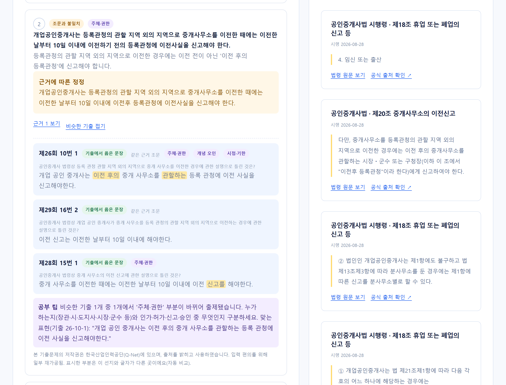

제1장
왜 만들었나
수험생의 문제
- 선지 하나를 확인하려면 법률·시행령·시행규칙을 오가며 조문을 찾아야 한다.
- 법령이 개정되면 기출 해설이 현행 법령과 어긋난다.
- 범용 챗봇은 근거 없이 그럴듯하게 틀린다.
LawGround의 답
- 검색 — 현행 조문 2,422개 중 근거 후보 5개
- 검증 — 후보 조문 안에서만 판정, 인용을 원문과 대조
- 설명 — 선지별 일치·불일치, 고친 문장, 변형 유형
- 학습 — 같은 조문을 물은 비슷한 기출
제2장
한 문제 따라가기
제36회 9번 · 실제 실행 결과1문제 넣기

시험지 문장을 붙여넣으면 본문과 선지 5개가 채워진다. 정답 1번·기준일 선택.
→
2분석 결과 근거 확인

분석 결과 화면캡처 자리
2번 주체·권한 10일 이내에 이전하기 전의 이전 후 등록관청에 신고 — 공인중개사법 제20조 인용.
→
3비슷한 기출

비슷한 기출 화면캡처 자리
같은 근거 조문을 물은 제26회 10번 · 제29회 16번 · 제28회 15번.
공부에서 제일 중요한 것
한 조문이 어떻게 바뀌어 출제되는지 한 화면에서 비교한다.
같은 근거 조문을 물은 기출 선지를 모아 보여 주고, 각 선지가 어떤 방식으로 틀리게 바뀌었는지 표시한다. 문제 하나를 풀면 그 조문에서 나올 함정을 함께 익힌다.
제3장
핵심 기술
SEARCH
하이브리드 검색
형태소 단어 검색(BM25)과 bge-m3 의미 검색을 RRF로 묶고, bge-reranker로 다시 정렬해 근거 후보 5개를 고른다.
VERIFY
환각 차단
LLM은 후보 조문만 보고 판정한다. 인용 문구·위치·시행일을 서버가 원문과 다시 대조하고, 다르면 저장하지 않는다.
PIPELINE
멈추지 않는 처리
Spring이 큐(RabbitMQ)로 작업을 넘기고 단계마다 checkpoint를 남긴다. 실패해도 끝난 단계부터 다시 한다.
제4장
검색 정확도와 기대효과
25~36회 기출 802문제근거 조문 검색 (Recall@5)
단위 %, 세로축 60%부터. 법률 용어가 글자 그대로 맞아야 하는 공법에서 단어 검색이 9%p 높았다.
기대효과
- 선지마다 근거 조문을 바로 확인해, 법령을 찾는 시간을 줄인다.
- 기준일의 현행 조문으로 다시 판정해, 개정으로 낡은 해설을 걸러 낸다.
- 같은 조문을 물은 기출을 묶어 보여 줘, 출제 변형을 스스로 익히게 한다.
- 근거 안에서만 판정하고 인용을 재확인하는 구조는 다른 법률 학습 도구에도 쓸 수 있다.

GitHub
github.com/lawground-team/LawGround
영상 QR
시연 영상